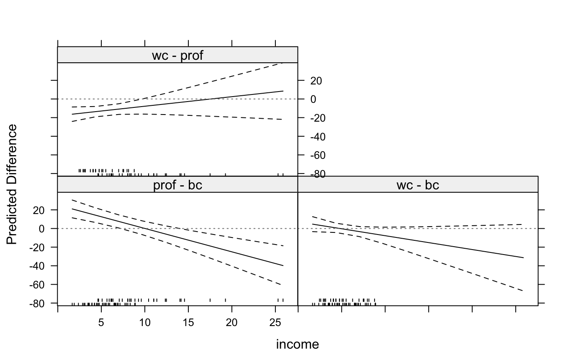

Predictions for Factor-Numeric Interactions in Linear Models
intQualQuant.RdThis function works on linear models with a single interaction between a continuous (numeric) variable and a factor. The output is a data frame that gives the predicted effect of moving from each category to each other category of the factor over the range of values of the continuous conditioning variable.
intQualQuant( obj, vars, level = 0.95, varcov = NULL, labs = NULL, n = 10, onlySig = FALSE, type = c("facs", "slopes"), plot = TRUE, vals = NULL, rug = TRUE, ci = TRUE, digits = 3, ... )
Arguments
| obj | An object of class |
|---|---|
| vars | A vector of two variable names giving the two quantitative variables involved in the interaction. These variables must be involved in one, and only one, interaction. |
| level | Confidence level desired for lower and upper bounds of confidence interval. |
| varcov | A potentially clustered or robust variance-covariance matrix
of parameters used to calculate standard errors. If |
| labs | An optional vector of labels that will be used to identify the
effects, if |
| n | Number of values of the conditioning variable to use. |
| onlySig | Logical indicating whether only contrasts with significant differences should be returned. Significance is determined to exist if the largest lower bound is greater than zero or the smallest upper bound is smaller than zero. |
| type | String indicating whether the conditional partial effect of the factors is plotted (if ‘facs’), or the conditional partial effect of the quantitative variable (if ‘slopes’) is produced. |
| plot | Logical indicating whether graphical results (if |
| vals | A vector of values at which the continuous variable will be held
constant. If |
| rug | Logical indicating whether rug plots should be plotted in the panels. |
| ci | Logical indicating whether confidence bounds should be drawn. |
| digits | Number indicating how many decimal places to round the numeric output. |
| ... | Other arguments to be passed down to |
Value
For type = ‘facs’ and plot = FALSE, a
data frame with the following values:
The expected difference between the two factor levels at the specified value of the conditioning variable.
The standard error of the expected differences.
The value of the continuous conditioning variable
A factor giving the two values of the factor being evaluated.
The lower 95% confidence interval for fit
The upper 95% confidence interval for fit
The conditional effect of the quantitative variable for each level of the factor.
The standard error of the conditional effect.
The t-statistic of the conditional effect.
The two-sided p-value.
Examples
data(Prestige, package="carData") Prestige$income <- Prestige$income/1000 mod <- lm(prestige ~ income * type + education, data=Prestige) intQualQuant(mod, c("income", "type"), n=10, plot.type="none")